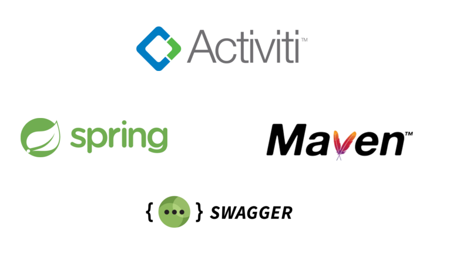

AMCA
Activiti Management CAR Alicante
Implantando BPM de forma ágil
Keyboard Shortcuts
| Full Screen | F |
| Next Slide | Space bar |
| Slide Notes | S |
| Thumbnail View | Esc |
Agenda
- ¿Qué es AMCA?
- ¿Qué nos aporta?
¿Qué es AMCA?
Es un framework que nos permite añadir un servicio de BPM en nuestras aplicaciones
¿Qué nos aporta?
- Ganamos tiempo
- Una arquitectura solida y viva
- Utilidades
- Gestión de excepciones
- Herramienta de regresión
Ganamos tiempo
-
Arranque
- Infraestructura (configuración del proyecto, base de datos, profiles)
- Test de integración
- Utilidades costaría varios meses de desarrollo
Una arquitectura sólida y viva
- Imágenes
Utilidades
Herremienta de regresión
Imagen
Utilidades
Gestión de excepciones
Algunos clientes ni lo tienen por falta de capacidad
Utilidades
Gestión de excepciones
Imagen